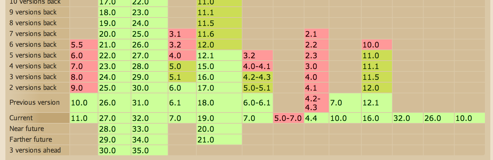
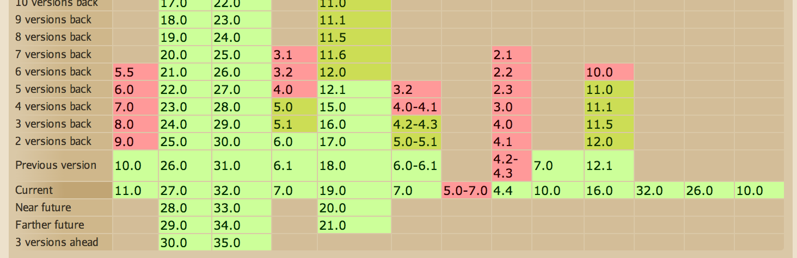
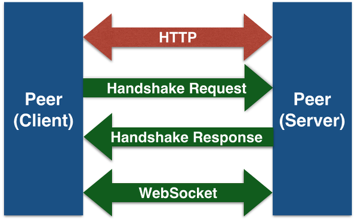
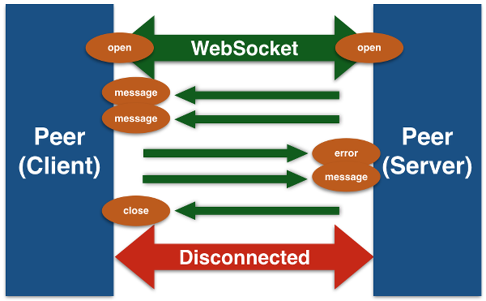
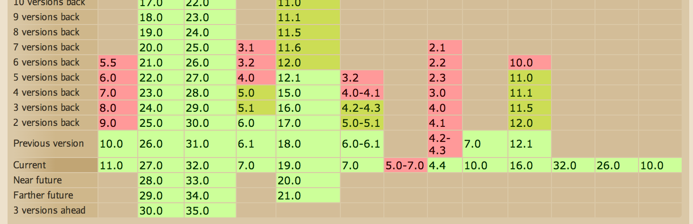
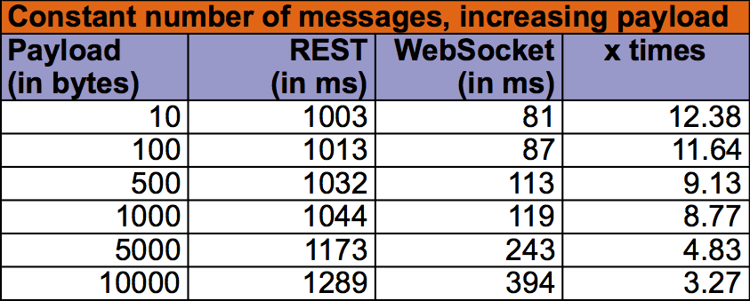
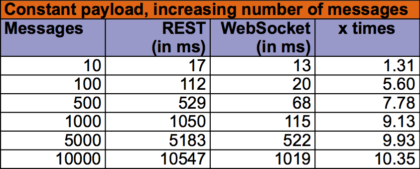

- Director, Developer Advocacy, Red Hat Inc.
- O’Reilly and McGraw Hill author
- Fitness freak
WebSocket JavaScript support in browsers
 

Historically, creating web applications that need bidirectional communication between a client and a server (e.g., instant messaging and gaming applications) has required an abuse of HTTP to poll the server for updates while sending upstream notifications as distinct HTTP calls. This results in a variety of problems:
A simpler solution would be to use a single TCP connection for traffic in both directions. This is what the WebSocket Protocol provides. Combined with the WebSocket API, it provides an alternative to HTTP polling for two-way communication from a web page to a remote server. The same technique can be used for a variety of web applications: games, stock tickers, multiuser applications with simultaneous editing, user interfaces exposing server-side services in real time, etc.
GET /chat HTTP/1.1
Host: server.example.com
Upgrade: websocket (1)
Connection: Upgrade (2)
Sec-WebSocket-Key: dGhlIHNhbXBsZSBub25jZQ==
Origin: http://example.com
Sec-WebSocket-Protocol: chat, superchat
Sec-WebSocket-Version: 13| 1 | HTTP upgrade header |
| 2 | Upgrade to WebSocket |
HTTP/1.1 101 Switching Protocols
Upgrade: websocket (1)
Connection: Upgrade (2)
Sec-WebSocket-Accept: s3pPLMBiTxaQ9kYGzzhZRbK+xOo= (3)
Sec-WebSocket-Protocol: chat| 1 | Server echoes the header |
| 2 | Server echoes the header, completes the handshake |
| 3 | Indicates server’s acceptance of connection |



 

GlassFish 4 (RI), WildFly 8, Atmosphere, Tomcat 7.0.x/8.0.x, Jetty 9.1.x, Caucho Resin
@ServerEndpoint, @ClientEndpointEndpointimport javax.websocket.*;
@ServerEndpoint("/hello") (1)
public class HelloBean {
@OnMessage (2)
public String sayHello(String name) {
return "Hello " + name;
}| 1 | @ServerEndpoint marks the POJO as WebSocket endpoint |
| 2 | @OnMessage marks the method called when WebSocket message is received |
@ServerEndpoint Turns a POJO in a server endpoint@ClientEndpoint Turns a POJO in a client endpoint@OnMessage Intercepts WebSocket message events@OnOpen Intercepts WebSocket open events@OnClose Intercepts WebSocket close events@OnError Intercepts WebSocket error events@PathParam Matches path segment of a URI-templatevalue Relative URI or URI template e.g. ‘/hello’ or ‘/chat/{subscriber-level}’decoders list of message decoder classnamesencoders list of message encoder classnamessubprotocols list of the names of the supported subprotocols@ServerEndpoint(
value="/hello",
decoders={MyMessageDecoder.class}, (1)
encoders={MyMessageEncoder.class} (2)
)
public class MyEndpoint {
. . .
}| 1 | Message decoder class |
| 2 | Message encoder class |
public class MyMessageDecoder implements Decoder.Text<MyMessage> { (1)
public MyMessage decode(String s) { (2)
JsonObject jsonObject = Json.createReader("...").readObject();
return new MyMessage(jsonObject);
}
public boolean willDecode(String string) { (3)
. . .
return true;
}
. . .
}| 1 | Text decoder |
| 2 | decode decodes a String to MyMessage |
| 3 | Returns true if payload can be processed |
public class MyMessageEncoder implements Encoder.Text<MyMessage> { (1)
public String encode(MyMessage myMessage) { (2)
return myMessage.jsonObject.toString();
}
. . .
}| 1 | Text encoder |
| 2 | encode encodes a MyMessage to String |
public class MyMessageDecoder implements Decoder.Binary<MyMessage> { (1)
public MyMessage decode(byte[] bytes) { (2)
. . .
return myMessage;
}
public boolean willDecode(byte[] bytes) { (3)
. . .
return true;
}
. . .
}| 1 | Binary decoder |
| 2 | decode decodes a byte[] to MyMessage |
| 3 | Returns true if payload can be processed |
Session parameter@PathParamvoid m(String s);void m(Float f, @PathParam(“id”)int id);Product m(Reader reader, Session s);void m(byte[] b); or void m(ByteBuffer b);Book m(int i, Session s, @PathParam(“isbn”)String isbn, @PathParam(“store”)String store);@ServerEndpoint("/chat")
public class ChatBean {
static Set<Session> peers = Collections.synchronizedSet("...");
@OnOpen (1)
public void onOpen(Session peer) {
peers.add(peer);
}
@OnClose (2)
public void onClose(Session peer) {
peers.remove(peer);
}
. . .| 1 | Called when connection is opened |
| 2 | Called when connection is closed |
. . .
@OnMessage
public void message(String message) {
for (Session peer : peers) { (1)
peer.getBasicRemote().sendObject(message);
}
}
}| 1 | Iterate over all the connected clients |
@ServerEndpoint("/chat")
public class ChatBean {
@OnMessage
public void message(String message, Session endpoint) {
for (Session peer : endpoint.getOpenSessions()) {
peer.getBasicRemote().sendObject(message);
}
}
}@ServerEndpoint("/orders/{order-id}") (1)
public class MyEndpoint {
@OnMessage public void processOrder(@PathParam(“order-id”)String orderId) { (2)
. . .
}
}| 1 | Template specified as {order-id} |
| 2 | Value specified using @PathParam |
@ClientEndpoint
public class HelloClient {
@OnMessage public void message(String message, Session session) {
(1)
}
}
WebSocketContainer c = ContainerProvider.getWebSocketContainer();
c.connectToServer(HelloClient.class, "hello"); (2)| 1 | Process message from server |
| 2 | Connect to server |
public class MyEndpoint extends Endpoint { (1)
@Override
public void onOpen(Session session) {
session.addMessageHandler(new MessageHandler.Text() { (2)
public void onMessage(String name) { (3)
try {
session.getBasicRemote().sendText("Hello " + name); (4)
} catch (IOException ex) { }
}
});
}
}| 1 | Extend an abstract class Endpoint |
| 2 | Add handler for each message |
| 3 | Handle the text message |
| 4 | Send the message to client |
ServerEndpointConfiguration config =
ServerEndpointConfigurationBuilder.create(MyEndpoint.class, "/foo")
.build();HttpServletRequest.upgrade(ProtocolHandler handler)<security-constraint>EventSourcetext/eventstream| WebSocket | Server-Sent Event |
|---|---|
Custom protocol | Simple HTTP |
Full-duplex, Bi-directional | Server-push only, client-server out of band |
Native support in most browsers | Can be poly-filled to back port |
Not straight forward protocol | Simple protocol |
| WebSocket | Server-Sent Event |
|---|---|
Pre-defined message handlers | Arbitrary events |
Application-specific | Built-in support for reconnection and event id |
May require server/proxy configuration | No server/proxy changes required |
Text and Binary | No support for binary types |
| Java EE 7 collateral - https://github.com/javaee-samples (Samples, Hands-on Lab, Slides) |
| WildFly 8 - http://wildfly.org, http://github.com/wildfly, @WildFlyAS |
| Slides generated with Asciidoctor and DZSlides backend |
| Original slide template - Dan Allen & Sarah White |